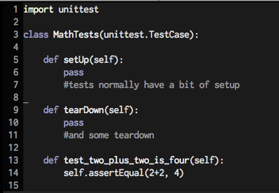

Behavior Driven Design with PyQt
BDD?
In software engineering, behavior-driven development (BDD) is a software development process based on test-driven development. Behavior-driven development combines the general techniques and principles of TDD with ideas from domain-driven design and object-oriented analysis and design to provide software development and management teams with shared tools and a shared process to collaborate on software development
A form of TDD where the tests are…
...from the perspective and using the language of the person using our software.
The norm
The part a person cares about

language == Words !
When I add 2 + 2
Then the result is 4
The app
Has two main processes
- UI
- Sensors
Feature: Bearing As the person steering In order to win the race I want to see the bearing towards the next mark Senario: Entering a Mark Given the app is running And my position is 81.6697 W 41.4822 N And I press the GOTO button And I enter the new mark | longitude | latatude | | -78.8494 | 42.9047 | And I press 'Submit' Then I see the bearing 234
Given the app is running
simplest application
import sys
app = Qt.QApplication([])
engine = Qt.QQmlEngine()
component = Qt.QQmlComponent(engine)
component.loadUrl(Qt.QUrl('app.qml'))
window = component.create()
window.show()
Given the app is running
app_location = '/Users/matt/workspace/instruments/app.py'
world.application = subprocess.Popen(['python', app_location])
pqaut.client.wait_for_automation_server()
The automation server
import sys
import pqaut.server
app = Qt.QApplication([])
pqaut.server.start_automation_server()
engine = Qt.QQmlEngine()
component = Qt.QQmlComponent(engine)
component.loadUrl(Qt.QUrl('app.qml'))
window = component.create()
window.show()
And my position is 81.6697 W 41.4822 N
args = (host='0.0.0.0', port=9001)
lettuce.world.qtapp = bjsonrpc.connect(*args)
...
@step(u'And my position is 81.23 W 41.123 N')
def and_my_position_is_81_23_w_41_123_n(step):
position = {'lat': 41.4822, 'lng':-81.6697}
lettuce.world.qtapp.call.change_position(**position)
When I press the GOTO button
Before
@lettuce.step('And I press the GOTO button')
def i_press_the_goto_button(step)
browser = selenium.selenium.selenium('localhost', 8000, 'python app.py')
browser.click('#GOTO')
Now
@step(u'And I press the GOTO button')
def and_i_press_the_goto_button(step):
pqaut.client.tap("goto")
@bottle.get("/ping")
def ping():
if get_root_widget() is None:
bottle.abort(503, "Still booting up, try again later")
return 'Ping!'
Interacting with PyQt
UI are represened by a tree of objects
Like a DOM tree, but created with Objects inhereting from the base Qt object QObject
interacting with pyqt
import PyQt5.Qt as Qt
Qt.QApplication.topLevelWindows()
Qt.QApplication.topLevelWidgets()
Finding Children
findChildren() # QObjects, QQuickItems, QWidget
contentItem() # QQuickWindow
rootObject() # QQuickWidget
Clicking on things
QTest.mouseClick(top_level_widget, Qt.LeftButton, Qt.NoModified, point)
And I enter the new mark
And I enter the new mark
| longitude | latatude |
| -78.8494 | 42.9047 |
@step(u'And I enter the new mark')
def and_i_enter_the_new_mark(step):
if step.hashes > 0:
new_mark = step.hashes[0]
pqaut.client.input("lat_text", new_mark['latatude'])
pqaut.client.input("lng_text", new_mark['longitude'])
And I press Submit
@step(u'And I press Submit')
def and_i_press_group1(step):
pqaut.client.tap("Submit")
- client sends message to click button
- server gets message, finds qobject, and clicks on thing
- button emits signal that is has been clicked
- form catches signal
- form emits signal with info collected by form
- bearing screen captures signal
- code behind calcuates bearing and sets property
- emits signal that property has been updated
- qml updates bearing on the screen (through js engine)
class Bearing(Qt.QQuickItem):
....
def __init__(self, *args, **kwargs):
....
pubsub.ps.set_mark.connect(self.update_mark)
....
def update_mark(self, lat, lng):
...
self.bearing = self.calc_bearing()
....
def calc_bearing(self):
lat_diff = self.current_lat - self.mark_lat
lng_diff = self.current_lng - self.mark_lng
b = int(math.degrees(float(math.atan(math.fabs(lat_diff)) / math.fabs(lng_diff))))
if lat_diff >= 0 and lng_diff <= 0:
return str(b)
elif lat_diff <= 0 and lng_diff >= 0:
return str(b + 90)
elif lat_diff <= 0 and lng_diff <= 0:
return str(b + 180)
elif lat_diff >= 0 and lng_diff <=0:
return str(b + 270)
Then I see the bearing 234
@step(u'Then I see the bearing 234')
def then_i_see_the_bearing_234(step):
pqaut.client.assert_is_visible('234')